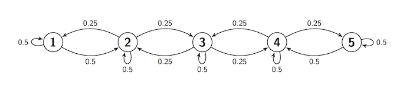

Transitions
Transitions¶
Let $X_0, X_1, X_2, \ldots $ be a Markov chain with state space $S$. By the Markov property, the probability of a trajectory or path of finite length is
\begin{align*} & P(X_0 = i_0, X_1 = i_1, X_2 = i_2, \ldots, X_n = i_n) \\ & = ~ P(X_0 = i_0)P(X_1 = i_1 \mid X_0 = i_0)P(X_2 = i_2 \mid X_1 = i_1) \cdots P(X_n = i_n \mid X_{n-1} = i_{n-1}) \end{align*}The conditional probabilities in the product are called transition probabilities. For states $i$ and $j$, the conditional probability $P(X_{n+1} = j \mid X_n = i)$ is called a one-step transition probability at time $n$.
For many chains such as the random walk, these one-step transition probabilities depend only on the states $i$ and $j$, not on the time $n$. For example, for the random walk,
\begin{equation} P(X_{n+1} = j \mid X_n = i) = \begin{cases} \frac{1}{2} & \text{if } j = i-1 \text{ or } j = i+1 \\ 0 & \text{ otherwise} \end{cases} \end{equation}for every $n$.
Stationary Transition Probabilities¶
When one-step transition probabilites don't depend on $n$, they are called stationary or time-homogenous. All the Markov chains that we will study in this course have time-homogenous transition probabilities.
For such a chain, define the one-step transition probability
$$ P(i, j) ~ = ~ P(X_{n+1} = j \mid X_n = i) ~ = ~ P(X_1 = j \mid X_0 = i) $$Then $$ P(X_0 = i_0, X_1 = i_1, X_2 = i_2, \ldots, X_n = i_n) ~ = ~ P(X_0 = i_0)P(i_0, i_1)P(i_1, i_2) \cdots P(i_{n-1}, i_n) $$
The one-step transition probabilities can be represented as elements of a matrix. This isn't just for compactness of notation – it leads to a powerful theory.
One-Step Transition Matrix¶
The one-step transition matrix of the chain is the matrix $\mathbb{P}$ whose $(i, j)$th element is $P(i, j) = P(X_1 = j \mid X_0 = i)$.
Often, $\mathbb{P}$ is just called the transition matrix for short. Note two important properties:
- $\mathbb{P}$ is a square matrix: its rows as well as its columns are indexed by the state space.
- Each row of $\mathbb{P}$ is a distribution: for each state $i$, and each $n$, Row $i$ of the transition matrix is the conditional distribution of $X_{n+1}$ given that $X_n = i$. Because each of its rows adds up to 1, $\mathbb{P}$ is called a stochastic matrix.
Let's see what the transition matrix looks like in an example.
Sticky Reflecting Random Walk¶
Often, the transition behavior of a Markov chain is easier to describe in a transition diagram instead of a matrix. Here is such a diagram for a chain on the states 1, 2, 3, 4, and 5. The diagram shows the one-step transition probabilities.
- If the chain is at any state, it stays there with chance 0.5.
- If the chain is at states 2 through 4, it moves to each of its two adjacent state with chance 0.25.
- If the chain is at states 1 or 5, it moves to its adjacent state with chance 0.5

We say that there is reflection at states 1 and 5. The walk is sticky because of the positive chance of staying in place.
Transition diagrams are great for understanding the rules by which a chain moves. For calculations, however, the transition matrix is more helpful.
To start constructing the matrix, we set the array s to be the set of states and the transition function refl_walk_probs to take arguments $i$ and $j$ and return $P(i, j)$.
s = np.arange(1, 6)
def refl_walk_probs(i, j):
# staying in the same state
if i-j == 0:
return 0.5
# moving left or right
elif 2 <= i <= 4:
if abs(i-j) == 1:
return 0.25
else:
return 0
# moving right from 1
elif i == 1:
if j == 2:
return 0.5
else:
return 0
# moving left from 5
elif i == 5:
if j == 4:
return 0.5
else:
return 0
You can use the prob140 library to construct MarkovChain objects. The from_transition_function method takes two arguments:
- an array of the states
- a transition function
and displays the one-step transition matrix of a MarkovChain object.
reflecting_walk = MarkovChain.from_transition_function(s, refl_walk_probs)
reflecting_walk
Compare the transition matrix $\mathbb{P}$ with the transition diagram, and confirm that they contain the same information about transition probabilities.
To find the chance that the chain moves to $j$ given that it is at $i$, go to Row $i$ and pick out the probability in Column $j$.
If you know the starting state, you can use $\mathbb{P}$ to find the probability of any finite path. For example, given that the walk starts at 1, the probability that it then has the path [2, 2, 3, 4, 3] is
$$ P(1, 2)P(2, 2)P(2, 3)P(3, 4)P(4, 3) \approx 0.4\% $$0.5 * 0.5 * 0.25 * 0.25 * 0.25
The MarkovChain method prob_of_path saves you the trouble of doing the multiplication. It takes as its arguments the starting state and the rest of the path (in a list or array), and returns the probability of the path.
reflecting_walk.prob_of_path(1, [2, 2, 3, 4, 3])
reflecting_walk.prob_of_path(1, [2, 2, 3, 4, 3, 5])
You can simulate paths of the chain using the simulate_path method. It takes two arguments: the starting state and the number of steps of the path. By default it returns an array consisting of the sequence of states in the path. The optional argument plot_path=True plots the simulated path. Run the cells below a few times and see how the output changes.
reflecting_walk.simulate_path(1, 7)
reflecting_walk.simulate_path(1, 10, plot_path=True)
$n$-Step Transition Matrix¶
For states $i$ and $j$, the chance of getting from $i$ to $j$ in $n$ steps is called the $n$-step transition probability from $i$ to $j$. Formally, the $n$-step transition probability is
$$ P_n(i, j) ~ = ~ P(X_n = j \mid X_0 = i) $$In this notation, the one-step transition probability $P(i, j)$ can also be written as $P_1(i, j)$.
The $n$-step transition probability $P_n(i, j)$ can be represented as the $(i, j)$th element of a matrix called the $n$-step transition matrix. For each state $i$, Row $i$ of the $n$-step transition matrix contains the distribution of $X_n$ given that the chain starts at $i$.
The MarkovChain method transition_matrix takes $n$ as its argument and displays the $n$-step transition matrix. Here is the 2-step transition matrix of the reflecting walk defined earlier in this section.
reflecting_walk.transition_matrix(2)
You can calculate the individual entries easily by hand. For example, the $(1, 1)$ entry is the chance of going from state 1 to state 1 in 2 steps. There are two paths that make this happen:
- [1, 1, 1]
- [1, 2, 1]
Given that 1 is the starting state, the total chance of the two paths is $(0.5 \times 0.5) + (0.5 \times 0.25) = 0.375$.
Because of the Markov property, the one-step transition probabilities are all you need to find the 2-step transition probabilities.
In general, we can find $P_2(i, j)$ by conditioning on where the chain was at time 1.
\begin{align*} P_2(i, j) ~ &= ~ P(X_2 = j \mid X_0 = i) \\ &= ~ \sum_k P(X_1 = k, X_2 = j \mid X_0 = i) \\ &= ~ \sum_k P(X_1 = k \mid X_0 = i)P(X_2 = j \mid X_1 = k) \\ &= ~ \sum_k P(i, k)P(k, j) \end{align*}That's the $(i, j)$th element of the matrix product $\mathbb{P} \times \mathbb{P} = \mathbb{P}^2$. Thus the 2-step transition matrix of the chain is $\mathbb{P}^2$.
By induction, you can show that the $n$-step transition matrix of the chain is $\mathbb{P}^n$.
Here is a display of the 5-step transition matrix of the reflecting walk.
reflecting_walk.transition_matrix(5)
This is a display, but to work with the matrix we have to represent it in a form that Python recognizes as a matrix. The method get_transition_matrix does this for us. It take the number of steps $n$ as its argument and returns the $n$-step transition matrix as a NumPy matrix.
For the reflecting walk, we will start by extracting $\mathbb{P}$ as the matrix refl_walk_P.
refl_walk_P = reflecting_walk.get_transition_matrix(1)
refl_walk_P
Let's check that the 5-step transition matrix displayed earlier is the same as $\mathbb{P}^5$. You can use np.linalg.matrix_power to raise a matrix to a non-negative integer power. The first argument is the matrix, the second is the power.
np.linalg.matrix_power(refl_walk_P, 5)
That is indeed the same as the matrix displayed by transition_matrix though harder to read.
When we want to use $\mathbb{P}$ in computations, we will use this matrix representation. For displays, transition_matrix is better.
The Long Run¶
To understand the long run behavior of the chain, let $n$ be large and let's examine the distribution of $X_n$ for each value of the starting state. That's contained in the $n$-step transition matrix $\mathbb{P}^n$.
Here is the display of $\mathbb{P}^n$ for the reflecting walk, for $n = 25, 50$, and $100$.
reflecting_walk.transition_matrix(25)
reflecting_walk.transition_matrix(50)
reflecting_walk.transition_matrix(100)
The rows of $\mathbb{P}^{100}$ are all the same! That means that for the reflecting walk, the distribution at time 100 doesn't depend on the starting state. The chain has forgotten where it started.
You can increase $n$ and see that the $n$-step transition matrix stays the same. By time 100, this chain has reached stationarity.
Stationarity is a remarkable property of many Markov chains, and is the main topic of this chapter.